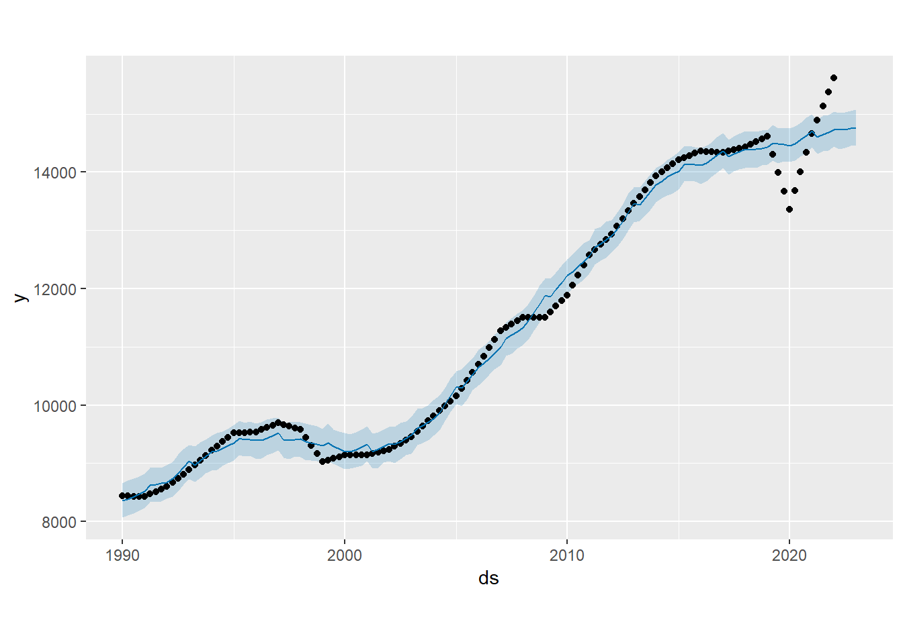

Chapter 7 Modelo Facebook’s Prophet
Continuamos el analisis a nuestra serie de tiempo con siguiente modelo candidado, un modelo de pronostico introducido por Facebook que actua como un modelo de regresion NO lineal
El primer paso es transformar la serie de tiempo a un formato de base de datos que es lo requerido por la libreria Prophet que define el modelo a considerar
start_date <- as.Date(paste(start(ST_TRIMESTRAL)[1], (start(ST_TRIMESTRAL)[2] - 1) * 3 + 1, "01", sep = "-"))
dates <- seq.Date(from = start_date, by = "quarter", length.out = length(ST_TRIMESTRAL))
# Crear el data.frame en formato requerido para Prophet
datos_prophet <- data.frame(
ds = dates, # Fechas
y = as.numeric(ST_TRIMESTRAL) # Valores de la serie
)Con el data frame ya en el formato requerido, ya podemos definir nuestro modelo predictivo
## Length Class Mode
## growth 1 -none- character
## changepoints 25 POSIXct numeric
## n.changepoints 1 -none- numeric
## changepoint.range 1 -none- numeric
## yearly.seasonality 1 -none- character
## weekly.seasonality 1 -none- character
## daily.seasonality 1 -none- character
## holidays 0 -none- NULL
## seasonality.mode 1 -none- character
## seasonality.prior.scale 1 -none- numeric
## changepoint.prior.scale 1 -none- numeric
## holidays.prior.scale 1 -none- numeric
## mcmc.samples 1 -none- numeric
## interval.width 1 -none- numeric
## uncertainty.samples 1 -none- numeric
## specified.changepoints 1 -none- logical
## start 1 POSIXct numeric
## y.scale 1 -none- numeric
## logistic.floor 1 -none- logical
## t.scale 1 -none- numeric
## changepoints.t 25 -none- numeric
## seasonalities 1 -none- list
## extra_regressors 0 -none- list
## country_holidays 0 -none- NULL
## stan.fit 4 -none- list
## params 6 -none- list
## history 5 data.frame list
## history.dates 129 POSIXct numeric
## train.holiday.names 0 -none- NULL
## train.component.cols 3 data.frame list
## component.modes 2 -none- list
## fit.kwargs 0 -none- listAhora para poder visualizar este modelo, es necesario hacer alguna prediccion
future <- make_future_dataframe(modelo_PP, periods = 4, freq = "quarter")
forecast <- predict(modelo_PP, future)
plot(modelo_PP, forecast) Los puntos en negro son nuestra serie de tiempo y las lineas en azul son las predicciones que toma nuestro modelo(junto con el sombreado del mismo color que representa la incertidumbre en predicciones futuras).
Podemos observar que nuestro modelo predice notablemente bien durante los primeros años de nuestros datos sin embargo, sucede lo que se temia, y es que hay una diferencia muy notable cuando se intenta predecir en el 2020, epoca de la pandemia. Esta seccion en especifico representa un problema para el modelo pues aqui se encuentran los datos mas atipicos, y son los que aumentan mucho el indice de error medio, y este error va mas adelante pues luego del 2020, el modelo ya no predice tan bien esos datos (como se evidencia en la ultima parte de nuestro grafico)
Luego es claro ver que nuestro modelo presentara una variabilidad muy alta (suma de cuadrados) en los residuales, tal y como se muestra a continuacion:
residuos <- datos_prophet$y - forecast$yhat[1:nrow(datos_prophet )] # Solo para el rango histórico
SSE <- sum(residuos^2)
SSE## [1] 7178291Como el valor en la suma de cuadrados en los residuos es bastante alto, se justifica una regresion para nuestra serie de tiempo que permita disminuir este valor (la variabilidad de los datos), por ende es normal pensar que el modelo de regresion linea e incluso el modelo ARIMA, definidos anteriormente con los que mejor representarian el comportamiento de los datos y por ende, un mejor resultado en sus predicciones, al menos a partir de 2020 en adelante.